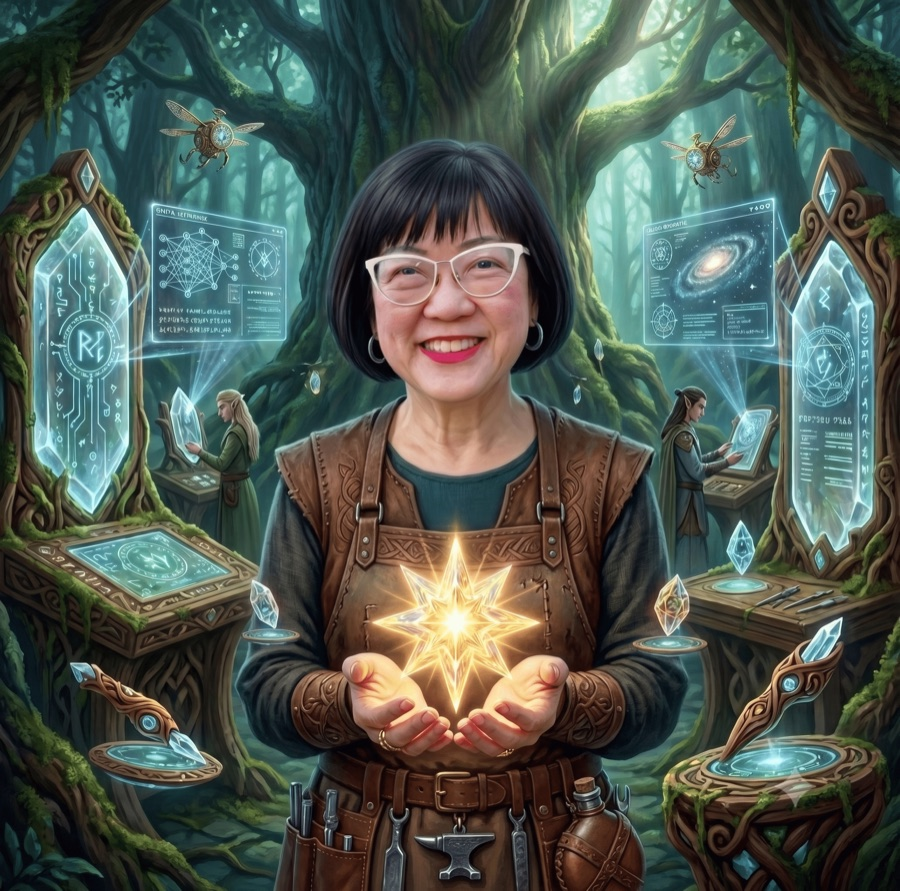

A plain-English walkthrough of the pipeline, for anyone who isn't deep in AI or code. No jargon required.

You don't need to know what NotebookLM or GitHub are to follow this. Think of it as a recipe with four stages: gather the ingredients, cook them into a page, write the recipe down so I can cook it again, then actually cook it again.
Picture one topic explained four different ways: a short video, an audio overview you can listen to like a podcast, a slide deck you can flip through, and an infographic you can scan in ten seconds. All four live together on a single page, styled to look like LiveStarLight, with its own web address anyone can visit. That page is a "brief."
Turning a topic into four pieces of content. Always done by hand, on purpose.
I hand a topic to an AI research tool called NotebookLM. It reads up on the subject and produces a video, an audio overview, a slide deck, and an infographic, all covering the same ground from different angles.
Each file gets uploaded to Google Drive, which works like a filing cabinet in the cloud. That copy stays the master version, the one I can always point back to.
Drive holds the original of each file, for safekeeping. But a live website can't reliably stream video or audio straight from someone's Drive on demand, there's no guaranteed connection at the moment a visitor clicks play. So a working copy of each file also gets built directly into the website itself. Not a mistake, just two copies doing two different jobs.
Where the raw files turn into an actual webpage.
I use an AI design tool to rough out what the page should look like: one page, four cards, a viewer that pops up for each format. It's a draft, not the real thing yet, more like a sketch on a napkin.
The sketch gets handed to Claude Code, an AI that writes real, working code. This is where the napkin sketch becomes an actual functioning page.
The draft used stand-ins, a fake countdown timer instead of a real video player, a stock photo instead of the real slide deck. Now every stand-in gets replaced with the genuine article: real video and audio playback, real slide images, a real clickable infographic.
Gold and parchment colors, the right typeface, the real logo and byline. This is the step that makes it unmistakably a LiveStarLight page rather than a generic AI Studio draft.
Before anything goes live, I click through every card and every viewer, on my own machine, to confirm things actually play, not just that the thumbnails look convincing.
The code goes to GitHub, which stores it and tracks every version. GitHub is connected to Vercel, a service that takes that code and puts it on the internet at a real web address. Once that connection is set up, every future update publishes itself automatically.
The page deliberately has no single button that hands over all four raw files at once. Each card links only to its own file. Handing someone the whole folder in one click would let them grab everything before ever seeing the page as it was meant to be experienced.
The new brief gets added to the top of LiveStarLight's index page, so the newest work is always the first thing a visitor sees.
Making sure I never have to re-explain this from scratch.
Once a brief works end to end, I don't just move on. I write the whole process down as a "skill," a saved set of instructions an AI assistant can follow on its own next time. It also locks in a standing rule: write everything in my voice, no filler, no AI-sounding phrases.
The real test of whether this pipeline actually holds up.
New topic in, same recipe, a finished brief out. I've run it three times now: Pacing the Frontier, The New AI PM Playbook, and Bridgewater's AI Analyst. Each round proved the process again, and the third round added the hub-listing step without anything else breaking. That's the real proof: it holds up on topics it wasn't built for, not just the one it started with.
Three topics, same recipe, three different results.